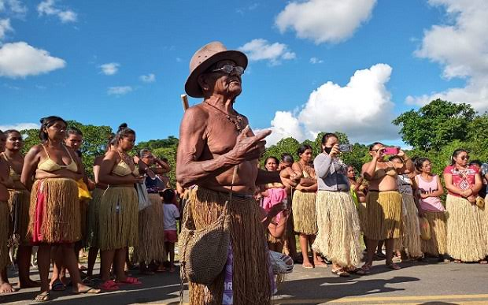

Lázaro Gonzaga de Souza nasceu em 20 de março de 1940 e se tornou um símbolo de resistência para o povo Kiriri. Sua trajetória é marcada por um compromisso inabalável com a defesa dos direitos de sua comunidade, refletindo sua forte liderança.